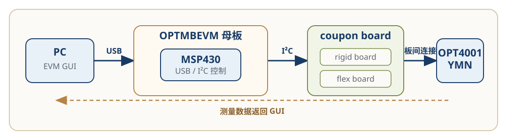
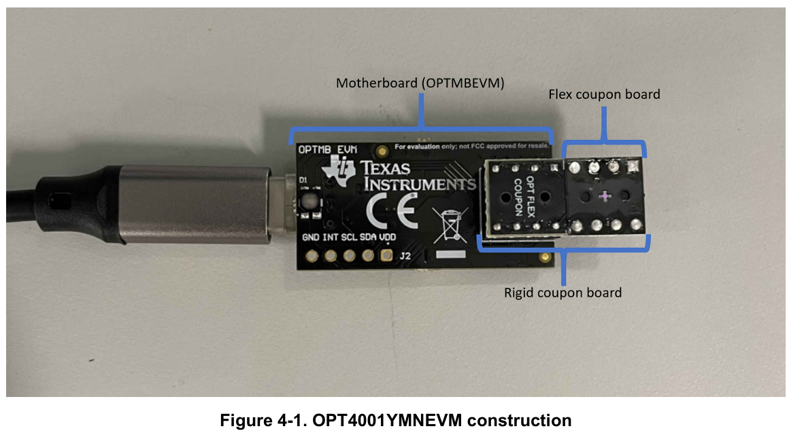
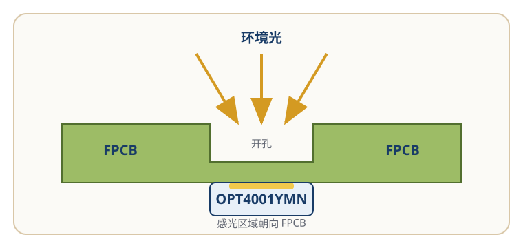

评估系统与光学硬件结构
OPT4001YMNEVM 通过 PC 端 EVM GUI、OPTMBEVM 母板和 OPT4001YMN coupon board 完成环境光测量。
理解这套评估系统，需要同时查看三条路径：
- 控制链路负责传递配置命令和测量数据；
- 电气链路负责器件供电和 I²C 通信；
- 光学链路负责让环境光到达感光区域。
本页说明这些部分如何连接，以及它们各自承担什么作用。
验证状态
本页根据 TI 《OPT4001YMNEVM User's Guide》和 《OPT4001 Datasheet》整理。
板卡关系、器件引脚和光学结构已经过官方资料核对。 作者目前没有 OPT4001YMNEVM 实物，尚未独立验证硬件连接、 通信和光照响应。
系统总览
一次测量需要经过以下部分：
PC EVM GUI
→ USB
→ OPTMBEVM 母板
→ MSP430
→ I²C
→ OPT4001YMN
配置命令沿这条路径到达传感器。测量完成后，结果再经过 MSP430 和 USB 返回 EVM GUI，并显示为 lux 数值和曲线。

图 1：OPT4001YMNEVM 系统组成和数据路径。根据 TI 《OPT4001YMNEVM User's Guide》第 3 页和第 5 页重绘。该图不表示实际 PCB 走线和机械比例。
板卡结构
官方指南从功能上将评估系统分为两个部分：
- OPTMBEVM 母板；
- OPT4001YMN coupon board。
展开 coupon board 后，可以看到三层物理结构：
OPTMBEVM motherboard
→ rigid coupon board
→ flex coupon board
→ OPT4001YMN

图 2：OPT4001YMNEVM 的板卡结构。来源：TI 《OPT4001YMNEVM User's Guide》，Figure 4-1，第 19 页。
各部分承担不同的作用：
| 部分 | 作用 |
|---|---|
| PC 与 EVM GUI | 配置器件并显示 lux 数值和曲线 |
| OPTMBEVM 母板 | 提供 USB 接口、电源和 MSP430 控制器 |
| Rigid coupon board | 提供机械支撑和母板插拔接口 |
| Flex coupon board | 承载 OPT4001YMN，并为感光区域提供开孔 |
| OPT4001YMN | 测量环境光并输出数字结果 |
Flex coupon board 焊接在 rigid coupon board 上，rigid coupon board 再插入 OPTMBEVM 母板。较薄的柔性板用于承载朝向 PCB 的传感器并保留进光开孔，刚性板则为它提供 机械支撑，使 coupon board 可以稳定插拔。
需要插拔 coupon board 时，应握住 rigid coupon board，不要按压或弯折 flex coupon board。
控制链路
PC 端 EVM GUI 不直接访问 OPT4001YMN。
GUI 发出的配置和读取命令通过 USB 到达 OPTMBEVM。母板上的 MSP430 将这些命令转换为 I²C 操作，再访问 coupon board 上的 OPT4001YMN。
测量完成后，MSP430 读取器件的结果寄存器，并通过 USB 将数据返回 GUI。 GUI 再将测量结果显示为 lux 数值和曲线。
各部分的职责如下：
| 部分 | 职责 |
|---|---|
| EVM GUI | 提供操作界面并显示结果 |
| USB | 连接电脑与 OPTMBEVM |
| MSP430 | 在 USB 命令和 I²C 操作之间建立控制链路 |
| I²C | 传输器件配置和寄存器数据 |
| OPT4001YMN | 完成环境光测量 |
工作模式、寄存器读取和 lux 换算见 配置与数据读取。
电气链路
OPT4001YMN 是四引脚 PicoStar 器件。
| 信号 | 类型 | 作用 |
|---|---|---|
| VDD | 电源 | 为 OPT4001YMN 供电 |
| GND | 电源 | 系统地 |
| SCL | 数字输入 | I²C 时钟 |
| SDA | 数字输入/输出 | I²C 数据 |
这四条信号从 OPTMBEVM 经过板间接口和 coupon board，最终连接到 OPT4001YMN。
OPTMBEVM 和 rigid coupon board 的通用接口中还可以看到 ADDR 和
INT 标识，但当前使用的 OPT4001YMN / PicoStar 没有对应的器件引脚。
ADDR 和 INT 适用于另一种 SOT-5X3 封装。判断器件能力时，应以当前
封装的 Datasheet 引脚定义为准，不能只根据母板丝印或通用接口名称判断。
光学链路
OPT4001YMN 的感光区域与器件焊盘位于同一侧。
器件焊接到 flex PCB 后，感光区域朝向电路板，因此环境光需要通过 flex PCB 上的开孔到达传感器。

图 3：OPT4001YMN 的光学路径。根据 TI 《OPT4001 Datasheet》 Figure 9-6 和 Figure 9-9 重绘。该图为结构示意，不表示实际尺寸和视场角。
因此，评估结果不仅依赖供电和 I²C 通信，还依赖以下条件：
- coupon board 安装方向正确；
- FPCB 开孔没有被遮挡；
- 感光区域没有被灰尘、指纹或其他异物覆盖；
- 周围结构没有明显限制进光。
通信正常，只能说明控制链路和电气链路已经建立，不能证明光学条件一定正常。
在自研 PCB 中，去耦电容需要靠近器件电源引脚，同时还应考虑邻近元件、 焊点和结构可能产生的遮挡或反射。具体距离、开孔尺寸和视场设计应结合 Datasheet、机械结构和实际测试确定，本页不提供量产布局参数。
故障定位
控制、电气和光学三条链路会产生不同的故障表现。
| 链路 | 正常状态 | 异常时优先检查 |
|---|---|---|
| 控制链路 | GUI 可以识别母板，命令和数据可以往返 | USB、COM 端口、母板供电和 MSP430 |
| 电气链路 | OPT4001YMN 获得供电并响应 I²C | VDD、GND、SCL、SDA 和板卡连接 |
| 光学链路 | 环境光可以到达感光区域 | 安装方向、FPCB 开孔和感光表面 |
例如：
- GUI 无法检测到母板时，优先检查电脑、USB 和 OPTMBEVM；
- 母板已连接但寄存器读取失败时，优先检查 coupon board 和 I²C 链路；
- 通信正常但 lux 读数异常时，还需要检查安装方向、开孔和感光区域。
完整的现象和检查顺序见 故障排查。
适用范围
本页适用于：
- OPT4001YMNEVM；
- OPTMBEVM 母板；
- OPT4001YMN coupon board；
- OPT4001YMN / PicoStar 封装。
本页不包含：
- SOT-5X3 封装的
ADDR和INT使用方法； - 完整 EVM 原理图说明；
- 具体寄存器配置和 lux 换算；
- 量产 PCB 的开孔尺寸和机械参数；
- 已经过作者实物验证的性能结论。
资料来源
OPT4001YMNEVM User's Guide
文档编号：SBOU278，December 2021
- PicoStar 感光方向和系统组成：第 3 页；
- PC、USB、母板和 I²C 关系：第 5 页；
- coupon board 连接和操作注意事项：第 6 页；
- 板卡结构：第 19 页；
- 原理图和 PCB：第 19—27 页。
OPT4001 Datasheet
文档编号：SBOS993A，revised December 2022
- YMN 与 SOT-5X3 引脚：第 4 页；
- PicoStar 开孔、光学布局和邻近元件影响：第 39 页。